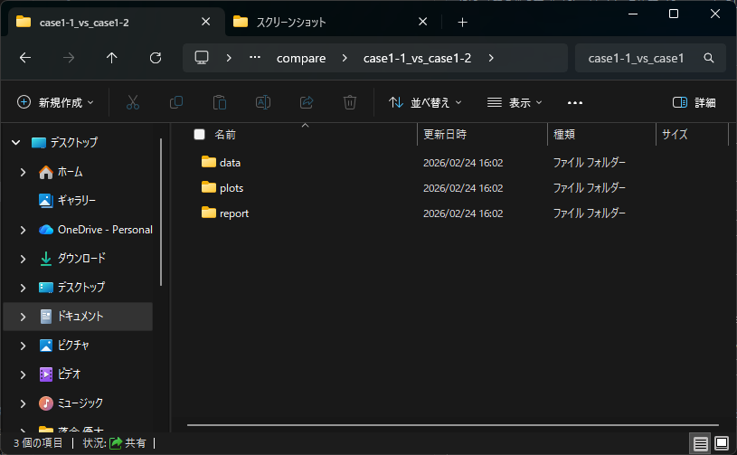

比較モード（Compare）¶
概要¶
比較モードは、基準ケースと比較ケースの差分を抽出し、比較レポートを生成する機能です。
入力項目¶
基準ケース:.iproまたはproject.xml比較ケース:.iproまたはproject.xml保存先フォルダ: 出力先フォルダ（入力プロジェクト配下は指定不可）
出力内容¶
- 簡易レポート（HTML形式）
- 簡易レポート（PDF形式）
- JSON / 差分図（自動出力）
補足:
- HTML を有効にすると
web/report/index.htmlとweb/detail/index.htmlが同時生成されます。 - 詳細比較は簡易レポート側の
詳細比較を開くから遷移します。
注意事項¶
- ソルバー情報や格子形状に互換性がない場合、警告付きで処理を継続することがあります。
画面例¶
- 比較モードのメイン画面
- 比較結果の概要画面

